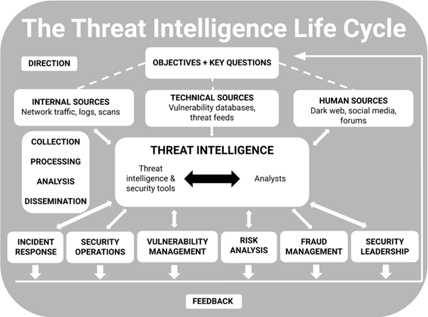
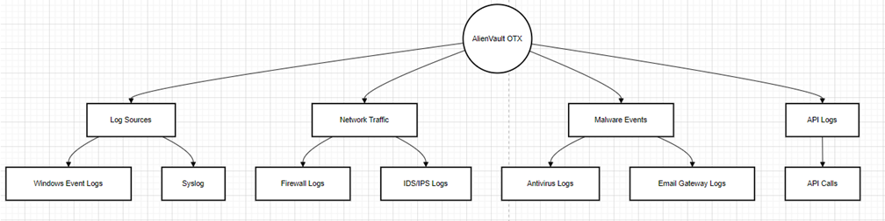

Abstract
The Security Threat Intelligence Add-On for Splunk enhances Splunk's threat detection capabilities by integrating versatile and efficient threat intelligence tools. This add-on provides customizable dashboards, real-time alerts, and seamless ingestion of threat feeds, enabling organizations to address emerging threats effectively.
Introduction
In today’s cyber threat landscape, organizations need scalable, real-time threat detection tools. This project aims to develop a Splunk add-on to aggregate threat feeds, normalize data, and offer actionable insights tailored for various industries like healthcare and finance.
Below is an image detailing the threat intelligence lifecycle
As I hinted above, STI plays a pivotal role in enhancing an organization's ability to defend against cyberattacks.STI systems work in real-time by continuously analysing incoming data and correlating it with existing knowledge on attack patterns and vulnerabilities.
This means that if any organisation identifies unpatched or newly discovered weaknesses in software or systems that could be exploited by attackers, it can enable them to respond faster, the quicker a threat is identified, the faster the response team can act to mitigate the risk
Market Position of Splunk
Splunk is a leader in operational intelligence, with a strong foothold in the market.

Key Features
- Integration with open-source threat feeds (e.g., AlienVault OTX, Abuse.ch).
- Customizable dashboards and alerts for tailored threat analysis.
- Data normalization using Splunk's Common Information Model (CIM).
- Enhanced detection logic correlating internal logs with external threat indicators.
Methodology
The project follows the Waterfall methodology:
- Research: Understanding Splunk add-ons and threat intelligence.
- Planning & Design: Developing a system architecture and data flow design.
- Implementation: Setting up data inputs, parsing and normalizing data, and building dashboards.
- Testing: Validating data ingestion and threat detection logic in controlled environments.
- Deployment: Preparing the add-on for Splunk Enterprise Cloud and potential publication on Splunk Base.
Here is an Architecture Diagram, assiting in visualising how my project works.
Advantages
- Improved visibility into potential threats through diverse data sources.
- User-centric customization for industry-specific needs.
- Seamless integration with existing Splunk setups.
- Cost efficiency by centralizing threat intelligence tools.
- Reduced false positives through advanced correlation searches.
Current Progress
A prototype has been developed, including data input configurations for AlienVault OTX and Abuse.ch. Scripts for ingesting and normalizing data have been tested successfully in a Splunk test environment.
Conclusion
This project highlights the potential for improving threat detection and response using a specialized Splunk add-on. With scalability, customization, and performance at its core, it addresses the evolving needs of cybersecurity professionals and lays a foundation for future innovations.